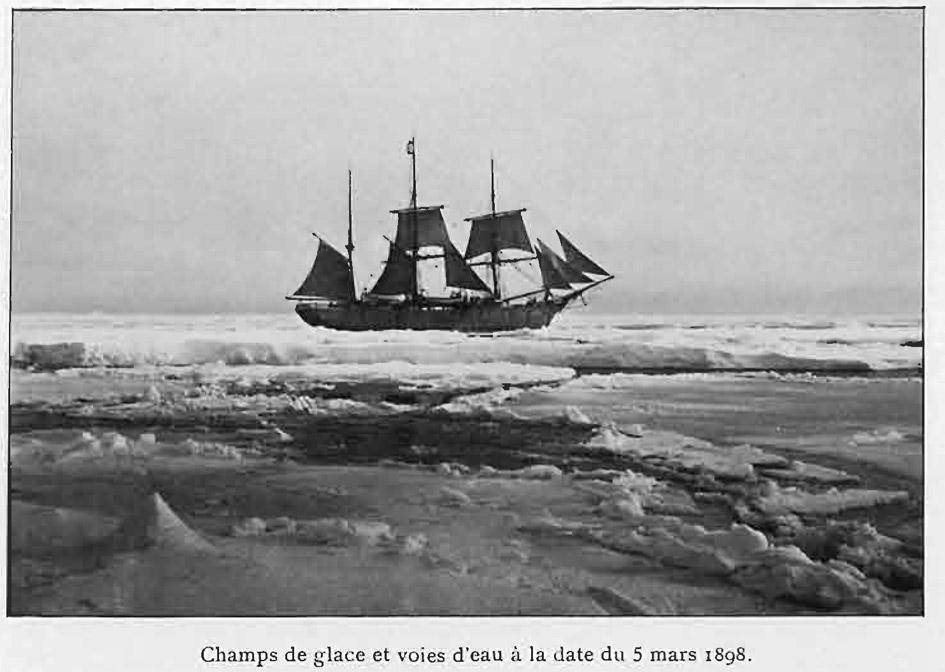
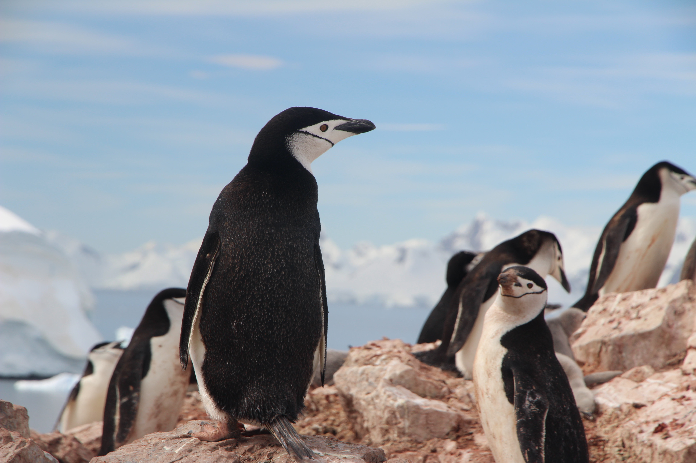

Exploration History
European exploration of the far south began long before Antarctica itself was reached. In 1773, James Cook became one of the first explorers to cross the Antarctic Circle, but heavy sea ice prevented his ships from travelling farther south.
In 1819, William Smith discovered the South Shetland Islands. The following year, the Russian expedition led by Fabian Gottlieb von Bellingshausen and Mikhail Lazarev reached the Antarctic ice near the continent and later sailed around Antarctica, discovering Peter I Island and Alexander I Land.
During the early 20th century, explorers began travelling deep into the Antarctic interior. On 14 December 1911, Roald Amundsen and his team became the first people to reach the South Pole. Robert Falcon Scott's expedition arrived about a month later, but Scott and his companions died on their return journey.

Geography
Antarctica is the highest continent on Earth, with an average elevation of more than 2,000 metres above sea level. In the centre of the continent, the surface rises to around 4,000 metres.
Most of Antarctica's height comes from its enormous ice sheet, which covers almost the entire continent. Only about 0.3% of its surface is ice-free, mainly in coastal areas, dry valleys, mountain ridges, and isolated peaks.
The Transantarctic Mountains divide the continent into East and West Antarctica. The highest point is Vinson Massif, which rises to 4,892 metres above sea level.

Wildlife
Antarctica is home to several species of seals and seabirds, including Adélie and emperor penguins. However, there are no fully terrestrial mammals native to the continent.
Most life in Antarctica is concentrated near the coast, where conditions are less extreme. On ice-free ground, vegetation consists mainly of mosses and lichens rather than large plants.
Antarctic animals depend heavily on the Southern Ocean. Krill forms the basis of the food chain for many fish, whales, seals, penguins, and other animals.

5 Interesting Facts
- Antarctica is the world's largest desert. Yes, a desert can be covered in ice! Deserts are defined by how little precipitation they receive, not by how hot they are.
- Only 11 people have ever been born in Antarctica. The first was Emilio Palma, who was born at Argentina's Esperanza Base in 1978.
- The Antarctic ice sheet contains about 60% of the world's fresh water. Most of this water is locked in the enormous ice sheet that covers almost the entire continent.
- At the geographic South Pole, every direction is north. The South Pole is the southernmost point on Earth, so any step away from it takes you north.
- Antarctica has no single official time zone. Research stations use different time zones, usually based on the country that operates or supplies them.
Sources: travelhx.com, aurora-expeditions.com, Wikipedia: Demographics of Antarctica
Things You Cannot Find in Antarctica
- Sovereign states
- Internationally recognized national borders
- An indigenous population
- Permanent cities
- A national government
Antarctica is unusual because many of the institutions that divide the rest of the world into separate national spaces simply do not exist there.